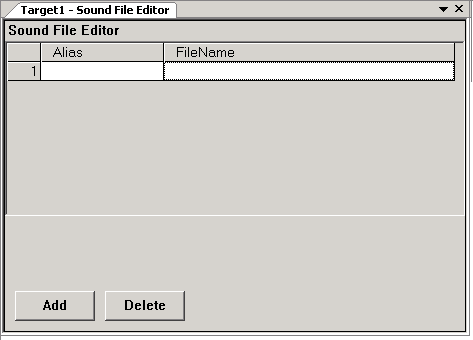
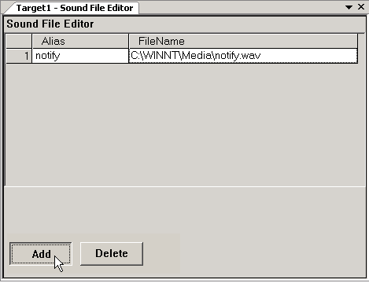

|
|
|
|
|
|
|
|
Sound files added to the project are downloaded to the target along with the project during download.
To add Sound files to your project:
In the Navigator's Project tab, double-click the Data Files node under the Environment node, then click the Sound node.
The Sound File Editor opens.

The Sound File Editor is where the target's sound files and their settings are defined and maintained. In the Sound File Editor, each row corresponds to a sound file, with the following information.
Row Number. Column displays row number for the sound file.
Alias. Alias displays either the default name or a user-defined name of the sound file. The alias does not include the sound file extension. To rename the alias, click the Alias cell and edit the name.
FileName. FileName displays the name and extension of the sound file. To replace one sound file with another: 1. Click the FileName cell, 2. Click the ellipsis, 3. In the Open dialog box, select the new sound file.
The Sound File Editor also contains two buttons:
Add. Opens the Data File Input window, where you can add new sound files to the target.
Delete. Removes the selected sound file from the target and the sound file editor. To select a sound file, you can click the row number, alias, or the file name.

Replacing sound files does not change the Alias name.
To set up a new sound file, in the Sound File Editor, click Add.

In the Open dialog box, select the Sound file and enable or disable the Copy File(s) into project checkbox:
Enabled: Copies the selected files into the project.
Disabled: Links the selected files to the project.

The Alias is the name that Vijeo-Designer associates with the sound file. The Alias is what you call when you work with the sound file in Touch animation, scripts, or alarms.
The Alias file name does not automatically change if you change the File Name. Either keep the old Alias name with the new File Name, or update the Alias.
The Alias supports up to 32 characters.
A single sound file or a group of sound files should not exceed 10 MB. Projects with sound files exceeding 10 MB require more time to save.
Click OK to return to the Sound File Editor.
The sound file can now be called into the user application using one of the following methods.
Switch, see Section 9.5.7, Sound Operations
Alarm, see Section 16.5.1, Setting Up Alarms to Play Sound Files
Script, see Section 18.3.8.4, Sound Methods